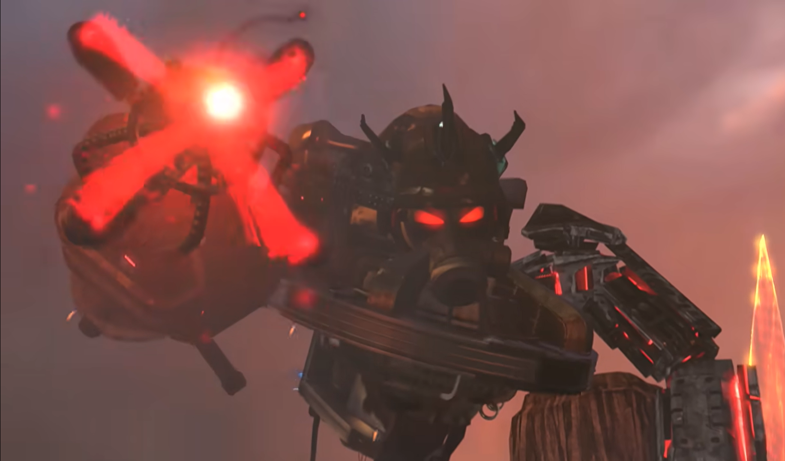
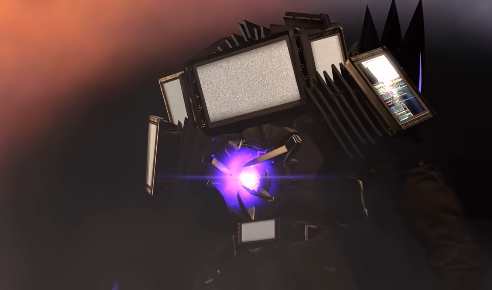

Who will be the most powerful character from Episode 1 to Episode 72? Find out!
1) Juggernaut Astro Toilet

Juggernaut Astro Toilet first appearence was in Episode 72 Skibidi Toilet. Althought he hasn't fought any real enemies. It is clear that this individual is a tough one due to his "Energy Ball" that he produces.
The "Energy Ball" travels extremely slow, yet it's blast is extremely deadly. Even if it missed the target it will surely blast them away from a radius demonstrated with Titan Speaker Man.
It's safe to say that the Titans will have a hard time taking down this individual due to his speed capability to travel at a speed of light. It also has an "Energy Shield" which blocks powerful attacks.
This individual has the power, speed and durability to take down any enemies of his.
2) Upgraded Titan TV Man

Titan TV Man first appearence way back during Episode 41 Skibidi Toilet. He then got ambushed and retreated during Episode 47 and later made a return more powerful during Episode 67.
He has alot of powers in his asset, such as "Energy Sword","Energy Beam", "THX Screen", "Brain Control Screen", "MY EYES Screen", Teleportation and many more.
He also has powers for advantages and safety, such as "Energy Steal", "Screen Minions", "Self-Killing Manipulation", "Sword Wings" and so on.
This individual is extremely powerful and might be the most powerful Skibidi Toilet character. But although he is powerful and durable, he lacks speed.